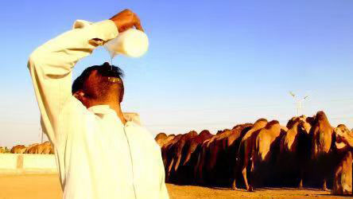

【边疆养驼人的肺腑之言】
怎么样才能买到货真价实的驼奶粉
边疆驼奶真相
如果你曾经喝过真正的边疆驼奶的话，回首回忆，你是否一直在追寻当时的味道，追寻那种留在记忆深处的纯天然味道？
只是.......现在， 中国驼奶市场八成都是假驼奶，那些所谓的边疆驼奶更是“挂羊头卖狗肉”，没几个是真的！你已经不可能在超市，在任何店铺，网络上购买到真正的驼奶。
除非，你有自己特殊的购买渠道......或者，某一个真正的养驼人是你的朋友。
我的探养驼之旅
我是一名美食小编，同时也是一个旅游爱好者，因为经常需要伏案工作很幸苦，日常生活中离不开奶制品。然而看到很多的新闻说，现在市场上很多驼奶都是假的，在微博上看到有记者采访边疆的养驼人，这位老农说：
很多人喝了不少驼奶，有可能根本一口真驼奶都没尝过！
超市驼奶为什么没营养效果？
据业内人士透露，超市卖驼奶，光进场费就占了售价的三成以上，再加一成的促销人工费，一成的包装及运输费，驼奶产量本来就少，扣除利润后，我们养驼人几乎不赚钱，这是不可能的。
换言之，市场上超市里不是真正的驼奶。虽然看起来非常浓稠、漂亮，但它主要的成分可能就是羊奶或者牛奶。 别光图便宜方便就买超市货，你买回家的驼奶粉可能都是假的或者添加的。还是要找正宗的驼奶农场货源，这样质量才有保证。
纯正的天然驼奶都流向了哪里？
为了追求真相，我查阅了许多资料。了解到 伊列克大草原 是养骆驼的好牧场之一。风景秀丽，特别适合养驼。爱好旅游的我说走就走，便想去草原看看真正的驼奶究竟是什么样子。

联合国重点推进项目
天然奶源，原产地直供
扫描二维码识别添加
△ 每天会更新分享小知识 △
探寻之旅，见证真正的边疆驼奶
伊列克大草原是世界四大草原之一的亚高山草甸植物区，自古以来就是著名的牧场。
我漫无目的的在牧草的草原上走着，呼吸着洁净的空气，看着散养的群马和骆驼，享受着这难得的舒适和自由，走了不知道多远的才终于见到了我们骆驼的主人-阿依木。
阿依木和他表哥还有几个牧民民再熟练地挤奶，大家伙儿挤奶的时候阿依木用小杯子盛了一杯驼奶让我试试味道！
我带着好奇心地尝了一下，清新不腻，有股淡淡的奶香，似乎还感受到了一点咸味。阿依木说这是由于骆驼在牧场中吃的都是盐碱性食物，比如红柳、骆驼刺、肉苁蓉、狼毒草等，所以纯驼奶会有稍微有一点点咸，驼奶不含过敏原，乳糖不耐受的可以空腹直接喝，不会引发不适感。
实际上，骆驼奶的营养价值非常高，骆驼奶不含过敏原，不会引发过敏反应，骆驼奶富含的维c是牛奶的三倍，铁含量是牛奶十倍，每100克驼奶含903毫克钙，含钙量很高。
为了保证自己产品的质量，每一次挤完奶，阿依木都会抽样拿去检测，确保驼奶的质量。在阿依木眼中，驼奶是宝贵的营养品，值得为它花费心思，听起来难以置信，但这种习惯已延续了数年。
联合国重点推进项目
天然奶源，原产地直供
扫描二维码识别添加
△ 每天会更新分享小知识 △
天下没有不散的筵席，离别之际依旧充满不舍
临别之际，阿依木说我的职业需要经常熬夜写稿子，让我带一些驼奶回去。

因为内陆没有好的销路，所以阿依木真诚的恳求我，如果驼奶喝的不错，希望可以帮她做下宣传，让这西部内部的好奶可以走出边疆。
我与阿依木告别后，踏上了回去的归途。
回去后，我就把从边疆带回来的驼奶分享给了亲朋好友，让他们品尝一下。身边的一位女同事喝了一段时间阿依木的边疆驼奶后，感觉很不错, 又跑来找我，要让我再给她带十瓶驼奶，她闺蜜也都想要……

联合国重点推进项目
天然奶源，原产地直供
扫描二维码识别添加
△ 每天会更新分享小知识 △
亲身验证的改变让我深深感到，纯天然的好驼奶绝对是大自然的恩赐！是真正有机的、生态的、可以唤醒生命本身活力的有机食品！

我深知自己力量单薄，但是我相信人间自有真情在，之所以写这篇文章就是为了让更多人知道 有阿依木这样一群人，在遥远的草原牧场，在过着清苦的的日子，是真正的养驼人，挤出真正的天然驼奶！
联合国重点推进项目
天然奶源，原产地直供
扫描二维码识别添加
△ 每天会更新分享小知识 △
他们是一群不懂卖情怀，
不懂说鬼话骗人的草原人，
只希望靠自己的双手
把草原的宝贝送出去，
靠勤劳换取生活，养活家人。
联合国重点推进项目
天然奶源，原产地直供
扫描二维码识别添加
△ 每天会更新分享小知识 △
坚决抵制假驼奶
为了您的健康和那些淳朴的养驼人
市场上假驼奶肆意横行，纯正的边疆驼奶却卖不到消费者手里，所以我想呼吁大家一起来抵制假驼奶，来支持这些依靠养骆驼以生存的牧民。他们日复一日的奔波在草原上，养殖着真贵的骆驼，挤出着天然的驼奶， 只为让纯正的驼奶走出去，让大家都能吃上原生态的健康奶！
今天凡是看到这篇文章的就是有缘人。我相信，天造好物，赐予有福之人，想要结缘阿依木的，想要一尝天赐好奶的，可以加阿依木微信。阿依木说有时候信号不好，所以如果回复各位朋友迟了还请见谅。
阿依木家三代养驼人，被大家誉为“营养师”
朋友圈分享驼奶吃法，不定期举办驼奶优惠活动
如果你想品尝纯天然驼奶、了解驼奶知识，
可以添加阿依木的微信号：
△ 每天会更新分享小知识 △
牧民耿直、真诚
为让边疆驼奶走出草原
有好心的朋友，相信我们，帮我们把文章转发出去参与助农推广，
让更多有需要的朋友吃到真正的边疆驼奶！
阿依木在这里感谢大家了！
精彩评论
想找他们咨询驼奶粉，是加这个微信号吗？
刚刚
楼主：是的，我加的就是这个号。
故事还未开始：感谢楼主啊！给老父亲买了点，听说对老人很好，每天不到10块钱是吧！
楼主：对的，我现在每天坚持喝，比喝牛奶甚至还便宜些。
故事还未开始：非常感谢，已经加上了！
真的那么好吗？
1分钟前
楼主：是的，我也是第一次接触驼奶，之前也是在一则新闻上看到过，驼奶的营养成分，就抱着试试的态度，买了一年的用量，刚开始感觉口干还不错，慢慢的喝了一个月左右，确实好
静静的秋：嗯嗯，请问我该怎样做，才能买到你说的驼奶？
楼主：我给你骆驼奶的官方微信，联系方式是微信你加她问问就行。
静静的秋：非常感谢，已经加上了！
特别有同感，就是怕上当，驼奶这东西，毕竟没有喝过，不知道怎么样。毕竟大家都不是专业的，怕被忽悠。楼上有好的渠道也麻烦介绍一下给我啊！
1分钟前
我之前在某宝上贪便宜买的驼奶粉，唉，感觉特别假，真的是太浪费钱了，你们说的这家驼奶的靠谱吗？
2分钟前
楼主：我一直在这里买的，品质不错，而且央视7台和9台都有播的
一袭红衣：真的吗，那我先去加上微信
我刚加了骆驼奶官方的微信号，怎么没人理我呢，是不是加错了？
3分钟前
楼主：她们可能有时回复不及时，你只要加的是微信就不会错，我是她家老顾客了，要耐心等待哦~
驼奶都是买给家里长辈的，买过几家，现在长辈们都指定要这家，还介绍我姑父添加了官方微信，没事就跟她们探讨用法，哈哈
3分钟前
一直不敢乱买，之前都是找在当地的朋友帮我买，时间长了也不好一直麻烦朋友，才试着买了你介绍的，发现质量比朋友买的还好，确实正宗
3分钟前
听说驼奶很好，我在某宝上买了驼奶粉，说多么多么好，还有身份证、自拍什么的，搞得很像回事，看到价格才几十块钱，我立马就买了一点回来。这但是买回来后，我身边的人都说品质不好！感觉便宜没有好货
4分钟前
楼主：我介绍你加这个微信产品都是有防伪二维码的，都是可以查到的
我每次喝骆驼奶家驼奶，都是2勺的量来吃，80-100毫升温开水，包装跟奶粉一样，携带都很方便。
4分钟前
味道不错，做活动的时候买的，价格也比较实惠，我喝了有3个月了。
6分钟前
楼主：是的，我老婆也在喝。
我之前去边疆，见过他们的骆驼奶粉加工厂，全部是高指标管理。而且是奶源地直供，很安全，很放心
6分钟前
 一米阳光
一米阳光
奶粉收到非常好，物美价廉。味纯，店家的服务非常好非常好到位，发货快，快递员也非常负责，很愉快的一次购物。
10分钟前
包装很好，我都买过好几次了，我爸爸喝了挺好的，容易吸收！大家放心购买吧！卖家服务态度好，物流快，必须赞赞赞赞赞赞
10分钟前
之前老爸喝的配方驼奶，后来又买了这个，两者对比还是你家店的驼奶好，纯驼奶粉也不膻，以后就买这个牌子了。
18分钟前
非常好的宝贝，收到就尝了，口感香醇，主要是营养价值高，而且物美廉价，日期新，边疆直发，顺丰很快，包装完美，正品无疑，有验证码验证，准备多买点囤起来慢慢喝，有需要的朋友可以放心购买。
18分钟前
买来给孩子喝的，口感可以，孩子可以接受，驼粉要比奶粉营养更全面，值得购买，还会回购的
21分钟前
买来给我小儿子喝的，他喝了后还蛮喜欢的，口感不错，奶味也浓，还有物流也快，服务也很好。
21分钟前
老公又买奶粉我吃，我每天早晚各一杯，准备备孕多个仔，哈哈
30分钟前
楼主：身体安康，早生贵子!
柑橘：感谢楼主啊！